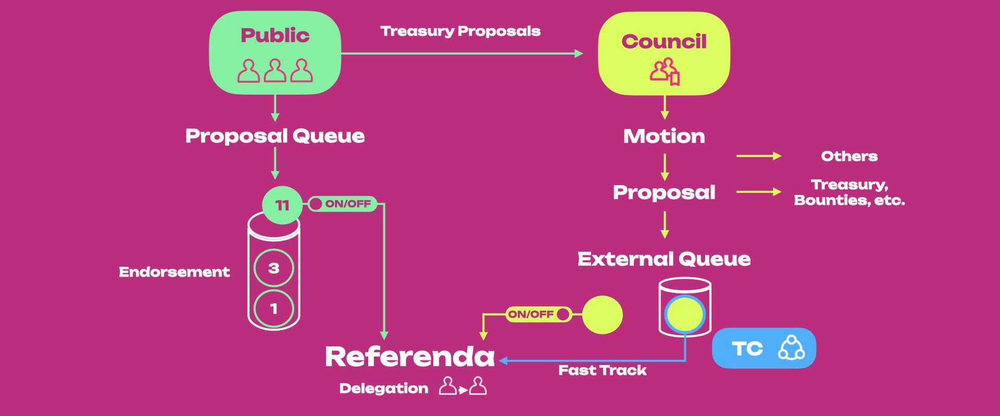
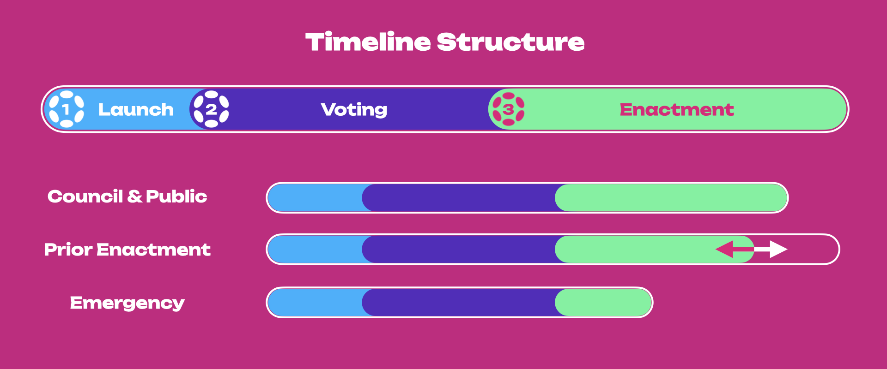
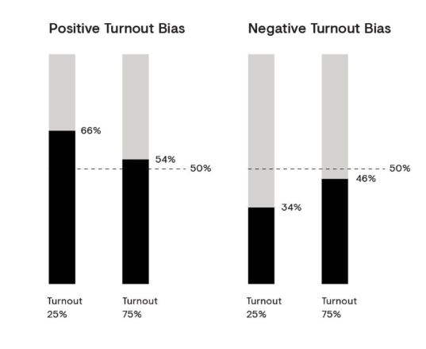
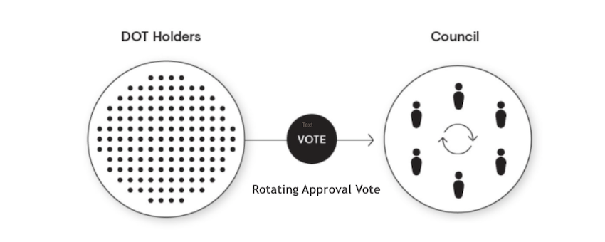

Governance
Polkadot uses a sophisticated governance mechanism that allows it to evolve gracefully overtime at the ultimate behest of its assembled stakeholders. The stated goal is to ensure that the majority of the stake can always command the network.
Polkadot brings together various novel mechanisms, including an amorphous (abstract) form of state-transition function stored on-chain defined in a platform-agnostic language (i.e. WebAssembly). It also allows for several on-chain voting mechanisms, such as referenda with the novel concept of Adaptive Quorum Biasing and batch approval voting. All changes to the protocol must be agreed upon by stake-weighted referenda.
To make any changes to the network, the idea is to compose active token holders and the council together to administrate a network upgrade decision. No matter whether the proposal is proposed by the public (token holders) or the Council, it finally will have to go through a vote on a referendum to let all holders, weighted by stake, make the decision.
Governance Summary¶
The figure below shows an overview of Governance V1 with the key actors and different paths for submitting a proposal that can potentially be voted on as a referendum.

The public (i.e. token holders) can submit a proposal that gets added to the proposal queue. Here, proposals are endorsed, and the one that gets the most support will climb to the top of the queue. When it is time, the proposal at the top of the queue will become a Public Referendum. For instance, the proposal with 11 endorsements is shown at the top of the queue in the figure, which is ready to become a referendum.
The public can also submit a treasury proposal, which must be evaluated by the Council through a motion. If the Council motion passes, the treasury proposal can be directly executed or go to the external queue, which will be voted on through a Council Referendum. See the figure's green horizontal path from the Public (green) to the Council (yellow). Treasury proposals and Council proposals can be directly executed (horizontal yellow arrows) or go to the external queue, where they will become a referendum
Note that the external queue always consists of a single proposal. A proposal in the external queue can be fast-tracked by the Technical Committee (light blue). The fast track can contain as many proposals as possible (also called emergency proposals) that can be voted on simultaneously with with the referenda introduced either by the Council or the Public. See in the figure the yellow circle (i.e. Council Proposal) exiting the external queue, and the yellow circle with a light-blue border also leaving the queue and being fast-tracked by the Technical Committee (TC). Once empty, the external queue can be filled with another Council proposal.
The Council can also submit proposals that will end up in the external queue. Voting on Council and Public proposals subject to an alternating timetable, shown in the figure as the "on" and "off" toggles on the external and proposal queues. In this example, the Public proposal will be voted on together with the fast-tracked Council Proposal. Voting on non-fast-tracked Council Proposals will be blocked until the alternating timetable switches the toggles, which stops Public proposals from becoming a referenda.
Referenda will follow an adaptive quorum biasing mechanism for deciding whether they get enacted, and if they do, they will be executed after an enactment period.
Token holders can delegate their votes (with a conviction multiplier) to another account belonging to a trusted entity voting on their behalf.
Proposals¶
Referenda can be started in different ways:
- Publicly submitted proposals
- Proposals submitted by the council, either through a majority or unanimously
- Proposals submitted as part of the enactment of a prior referendum (i.e. making a referendum to start a new referendum)
- Emergency proposals submitted by the Technical Committee and approved by the Council
Starting a proposal in Governance V1
For more information about how to start a proposal, see the dedicated page.
Endorsing Proposals¶
Anyone can submit a proposal by depositing the minimum amount of tokens for a certain period (number of blocks). If someone agrees with the proposal, they may deposit the same amount of tokens to support it - this action is called endorsing. The proposal with the highest amount of bonded support will be selected to be a referendum in the next voting cycle based on an alternating voting timetable.
Cancelling Proposals¶
A proposal can be canceled if the Technical Committee unanimously agrees to do so or if Root Origin (e.g. sudo) triggers this functionality. A canceled proposal's deposit is burned.
Additionally, a two-thirds majority of the council can cancel a referendum. This may function as a last-resort if there is an issue found late in a referendum's proposal, such as a bug in the code of the runtime that the proposal would institute.
If the cancellation is controversial enough that the council cannot get a two-thirds majority, then it will be left to the stakeholders en masse to determine the proposal’s fate.
Blacklisting Proposals¶
A proposal can be blacklisted by Root Origin (e.g. sudo). A blacklisted proposal and its related referendum (if any) are immediately canceled. Additionally, a blacklisted proposal's hash cannot re-appear in the proposal queue. Blacklisting is useful when removing erroneous proposals that could be submitted with the same hash.
Upon seeing their proposal removed, a submitter who is not properly introduced to the democracy system of Polkadot might be tempted to re-submit the same proposal. That said, this is far from a fool-proof method of preventing invalid proposals from being submitted - a single changed character in a proposal's text will also change the hash of the proposal, rendering the per-hash blacklist invalid.
Referenda¶
Referenda are simple, inclusive, stake-based voting schemes. Each referendum has a specific proposal
that takes the form of a privileged function call in the runtime. That function includes the
most powerful call: set_code, which can switch out the entire runtime code, achieving what
would otherwise require a "hard fork".
Referenda are discrete events, have a fixed period where voting happens, and then are tallied, and the function call is executed if the vote is approved. Referenda are always binary: your only options in voting are "aye", "nay", or abstaining entirely.
Referenda Timeline¶
The structure of the timeline for all referenda is the same regardless of who initiates the proposal, although the timeline length can vary (see below).

The figure above provides a summary view of the referenda timeline for Governance V1.
In (1), the proposal is submitted, and the Launch Period starts. During this period of indefinite length the voters can endorse proposals by bonding the same amount of tokens used by the depositor. Deposited tokens for endorsement will be returned once the proposal becomes a referendum. During the launch period, the proposal will compete with other proposals, and the one that gets to the top will be selected for a referendum when the next voting period starts.
The figure shows that the launch period is shown with a fixed length. Still, it varies depending on who initiated the proposal and how many proposals there are in the pipeline. Council motions will likely have a short launch period when compared to the public referenda which might take longer unless they are the only ones in the pipeline.
In (2), the proposal is selected for a referendum. Proposals initiated by the public will become a public referendum, while those initiated by the council will become council referenda. The voting period lasts 28 days (7 days on Kusama), after which, if the proposal is approved, it will go through an enactment period. Rejected proposals will need to start from (1). Note that Governance V1 uses an alternating voting timeline where voters can vote either for a public proposal or a council motion every 28 days (7 days on Kusama).
In (3), the proposal is approved and moves through the enactment period that can be of different lengths depending on who initiated the proposal in the first place, with emergency proposals being the fastest ones and the only ones that can be voted simultaneously with other referenda.
Public Referenda¶
Public referenda will have a positive turnout bias, meaning that they will require a heavy supermajority of aye votes to pass at low turnouts but as turnout increases towards 100%, it will require a simple majority of aye votes to pass (i.e. 51% wins).
Note that the bonded tokens will be released once the proposal is tabled (that is, brought to a vote), and a maximum of 100 public proposals can be in the proposal queue.
turnout
The total number of voting tokens excluding conviction or voluntary locking.
Council Referenda¶
Unanimous Council - When all council members agree on a proposal, it can be moved to a referendum with a negative turnout bias. Briefly, it will require a heavy supermajority of nay votes to reject at low turnouts, but as turnout increases towards 100%, it will require a simple majority of nay votes to fail (i.e. 51% wins).
Majority Council - When agreement from only a simple majority of council members occurs, the referendum will need simple majority to pass.
Public- vs. Council-initiated Referenda
Public referenda must be agreed upon using a positive bias to mitigate attacks by malicious or ill-conceived proposals. Conversely, when a proposal is unanimously voted in favor by the council, it benefits from using the negative bias. We assume low turnout is less problematic if the council proposes a referendum. Also, the council members are elected by the community and have strong technical as well as functional knowledge about the system, and we assume solid justifications back changes proposed by the council.
Alternating Voting Timetable¶
All referenda are executed by Root Origin. It follows that multiple referenda cannot be voted upon in the same period, excluding emergency referenda. An emergency referendum occurring at the same time as a regular referendum (either public- or council-proposed) is the only time multiple referenda can be voted on.
Every 28 days (7 days on Kusama), a new referendum will come up for a vote, assuming there is at least one proposal in one of the queues. There is a queue for Council-approved proposals and a queue for publicly-submitted proposals. The referendum to be voted upon alternates between the top proposal in the two queues, where the proposals' rank is based on endorsement (i.e. bonded tokens).
Adaptive Quorum Biasing¶
Polkadot introduces the concept of Adaptive Quorum Biasing, which is used to alter the effective super-majority required to make it easier or more difficult for a proposal to pass depending on voting power (turnout) and origin (Council or public).
Adaptive Quorum Biasing creates three tallying mechanisms: majority carry, super-majority approve, and super-majority against. They all equate to a simple majority-carry system at 100% turnout. Their selection depends on which entity proposed the proposal and whether all Council members voted yes (in the case of Council Referenda).
| Entity | Metric |
|---|---|
| Public | Positive Turnout Bias (Super-Majority Approve) |
| Council (Complete agreement) | Negative Turnout Bias (Super-Majority Against) |
| Council (Majority agreement) | Simple Majority |
Let's use the image below as an example.

If a publicly submitted referendum only has a 25% turnout, the tally of aye votes has to reach 66% for it to pass since we applied Positive Turnout Bias. In contrast, when it has a 75% turnout, the tally of aye votes has to reach 54%, which means that the super-majority required decreases as the turnout increases. A positive turnout bias, whereby a heavy super-majority of aye votes is required to carry at low turnouts. However, as turnout increases towards 100%, it becomes a simple majority carry as below.
Where approve is the number of aye votes, against is the number of nay votes, turnout is
the total number of voting tokens excluding voluntary locking, and
electorate is the total number of tokens issued in the network.
When the council proposes a new proposal through unanimous consent, the referendum would be put to the vote using Negative Turnout Bias. Referring to the above image, when a Council referendum only has a 25% turnout, the tally of aye votes has to reach 34% for it to pass, while if the turnout increases to 75%, the tally of aye votes has to reach 46%. A negative turnout bias requires a heavy super-majority of nay votes to reject at low turnouts. However, as turnout increases towards 100%, it becomes a simple majority carry as below.
In short, when the turnout rate is low, a super-majority is required to reject the proposal, which means a lower threshold of aye votes must be reached. As turnout increases toward 100%, it becomes a simple majority, a simple comparison of votes. If there are more aye votes than nay, then the proposal is carried, no matter how much stake votes on the proposal.
To know more about where these above formulas come from, please read the democracy pallet.
Example of Adaptive Quorum Biasing¶
Let's assume we only have 1,500 DOT tokens in total and that this is a public proposal.
- John: 500 DOT
- Peter: 100 DOT
- Lilly: 150 DOT
- JJ: 150 DOT
- Ken: 600 DOT
John: Votes Yes for a 4 week lock period => 500 x 1 = 500 Votes
Peter: Votes Yes for a 4 week lock period => 100 x 1 = 100 Votes
JJ: Votes No for a 16 week lock period => 150 x 3 = 450 Votes
- approve = 600 Votes
- against = 450 Votes
- turnout = 750 Votes
- electorate = 1500 Votes
Since the above example is a public referendum, Super-Majority Approve would be used to calculate the result. Super-Majority Approve requires more aye votes to pass the referendum when turnout is low; therefore, based on the above result, the referendum will be rejected.
only the winning voter's tokens are locked.
If the voters on the losing side of the referendum believe that the outcome will have adverse effects, their tokens are transferrable, so they will not be locked into the decision. Winning proposals are autonomously enacted after the enactment period.
Enactment¶
Referenda are considered baked if they are closed and tallied. Assuming a referendum is approved, it will be scheduled for enactment. Referenda are considered unbaked if they are pending an outcome, i.e. being voted on.
All referenda are associated with an enactment delay or enactment period. This is the period between a referendum ending and (assuming it was approved) the changes being enacted.
For public and Council referenda, the enactment period is a fixed time of 28 days (8 days on Kusama). For proposals submitted as part of the enactment of a prior referendum, it can be set as desired. Emergency proposals deal with major problems with the network and need to be "fast-tracked". These will have a shorter enactment period.
Voting on a Referendum¶
To vote, a voter generally must lock their tokens up for at least the enactment period beyond the end of the referendum. This is to ensure that some minimal economic buy-in to the result is needed and to dissuade vote selling.
Referenda explainer video
To learn more about voting on referenda, please check out our technical explainer video.
It is possible to vote without locking, but your vote is worth a small fraction of a normal vote, given your stake. At the same time, holding only a small amount of tokens does not mean that the holder cannot influence the referendum result, thanks to time-locking or voluntary locking (see below).
Voluntary Locking¶
Voluntary Locking
For more information about voluntary locking or conviction voting see Polkadot OpenGov.
Delegations¶
In Polkadot, you can delegate your voting power to another account you trust if you are not willing to stay up-to-date with all referenda.
You can also use a governance proxy to vote on behalf of your stash account. The proxy can be yours, or you can authorize a third-party governance proxy to vote with your stash. Learn more from the dedicated page on Proxy Accounts.
Council¶
To represent passive stakeholders, Polkadot introduces the idea of a "council". The council is an on-chain entity comprising several actors, each represented as an on-chain account. The Polkadot council consists of 13 members (19 on Kusama).
Along with controlling the treasury, the council is called upon primarily for three tasks of governance:
- Proposing sensible referenda
- Cancelling uncontroversially dangerous or malicious referenda
- Electing the Technical Committee.
For a referendum to be proposed by the council, a strict majority of members must be in favor, with no member exercising a veto. Vetoes may be exercised only once by a member for any single proposal. If the proposal is resubmitted after a cool-down period, they may not veto it a second time.
Council motion that pass with a ⅗ (60%) super-majority - but without reaching unanimous support - will move to a public referendum under a neutral, majority-carries voting scheme. In the case that all members of the council that voted are in favor of a motion, the vote is considered unanimous and becomes a referendum with negative turnout bias.
Explainer video on the Council
For more information, check out our video explainer on Council
Prime Members¶
The council, being an instantiation of Substrate's Collective pallet, implements what's called a prime member whose vote acts as the default for other members that fail to vote before the timeout.
The prime member is chosen based on a Borda count.
The purpose of having a prime council member is to ensure a quorum, even when several members abstain from a vote. Council members might be tempted to vote a "soft rejection" or a "soft approval" by not voting and letting the others vote. The existence of a prime member forces councilors to be explicit in their votes or have their vote counted for whatever is voted on by the prime.
Technical Committee¶
The Technical Committee(TC) was introduced in the Kusama rollout and governance post as one of the three chambers of Kusama governance (along with the Council and the Referendum chamber). The TC is composed of the teams that have successfully implemented or specified either a Polkadot runtime or Polkadot Host. Teams are added or removed from the TC via a simple majority vote of the Council.
The TC aims to safeguard against malicious referenda, implement bug fixes, reverse faulty runtime updates, or add new but battle-tested features. The TC can fast-track proposals using the Democracy pallet and is the only origin that can trigger the fast-tracking functionality. We can think of the TC as a "unique origin" that cannot generate proposals but fast-track existing ones.
Fast-tracked referenda are the only referenda that can be active alongside another active referendum. Thus, with fast-tracked referenda, it is possible to have two active referendums simultaneously. Voting on one does not prevent a user from voting on the other.
Frequently Asked Questions¶
How to be a council member?¶

All stakeholders can signal their approval of any of the registered candidates.
Council elections are handled by the same Phragmén election process that selects validators from the available pool based on nominations. However, token holders' votes for councilors are isolated from any nominations they may have on validators. Council terms last for one week on Polkadot and one day day on Kusama.
At the end of each term, Phragmén election algorithm runs and the result will choose the new councilors based on the vote configurations of all voters. The election also chooses a set number of runners-up, which is 20 on Polkadot (12 on Kusama), that will remain in the queue with their votes intact.
As opposed to a "first-past-the-post" electoral system, where voters can only vote for a single candidate from a list, a Phragmén election is a more expressive way to include each voter’s views. Token holders can treat it as a way to support as many candidates as they want. The election algorithm will find a fair subset of the candidates that most closely matches the expressed indications of the electorate as a whole.
Let's take a look at the example below.
| Round 1 | |||||
|---|---|---|---|---|---|
| Token Holders | Candidates | ||||
| A | B | C | D | E | |
| Peter | X | X | X | X | |
| Alice | X | ||||
| Bob | X | X | X | ||
| Kelvin | X | X | |||
| Total | 2 | 1 | 3 | 2 | 2 |
The above example shows that candidate C wins the election in round 1, while candidates A, B, D & E keep remaining on the candidates' list for the next round.
| Round 2 | ||||
|---|---|---|---|---|
| Token Holders | Candidates | |||
| A | B | D | E | |
| Peter | X | X | ||
| Alice | X | X | ||
| Bob | X | X | X | X |
| Kelvin | X | X | ||
| Total | 4 | 4 | 1 | 1 |
The top-N (say 4 in this example) runners-up can remain, and their votes persist until the next election. After round 2, even though candidates A & B get the same number of votes in this round, candidate A gets elected because after adding the older unused approvals, it is higher than B.
How can I appeal to the council to enact a change on my behalf?¶
In some circumstances, you may want to appeal to the on-chain council to enact a change on your behalf. One example of this circumstance is the case of lost or locked funds when the funds were lost due to a human interface error (such as inputting an address for another network). Another example is if you participated in the 2017 Polkadot ICO with a multi-sig address which now does not let you sign a message easily. When these circumstances can be proven beyond a reasonable doubt to be an error, the council may consider a governance motion to correct it.
The first step to appeal to the council is to contact the councilors. There is no singular place where you are guaranteed to grab every councilor’s ear with your message. However, there are a handful of good places to start where you can get the attention of some of them. After creating an account and joining this room, you can post a well-thought-through message here that lays down your case and justifies why you think the council should consider enacting a change to the protocol on your behalf.
At some point, you will likely need a place for a longer-form discussion. For this, making a post on Polkassembly is the recommended place to do so. When you write a post on Polkassembly, present all the evidence for your circumstances and state clearly what kind of change you would suggest to the councilors to enact.
Info
Remember, the councilors do not need to make the change, it is your responsibility to make a strong case for why the change should be made.
Gov1 Runtime Upgrade Monitoring¶
Monitor the chain for:
democracy(Started)events and logindexandblockNumber. This event indicates that a referendum has started (although it does not mean it is a runtime upgrade). Get the referendum info*; it should have a status ofOngoing. Find the ending block number (end) and the enactmentdelay(delay). If the referendum passes, it will execute on block numberend + delay.democracy(Passed),democracy(NotPassed), or,democracy(Cancelled)events citing the index. IfPassed, you need to look at thescheduler(Scheduled)event in the same block for the enactment block.democracy(PreimageNoted)events with the same hash as theReferendumInfoOf(index)item. This may be up to the last block before execution, but it will not work if this is missing.democracy(Executed)events for actual execution. In the case of a runtime upgrade, there will also be asystem(CodeUpdated)event.
You can also monitor Polkassembly for discussions on on-chain proposals and referenda.
* E.g. via pallets/democracy/storage/ReferendumInfoOf?key1=index&at=blockNumber on Sidecar.
Resources¶
- Initial Governance Description
- Democracy Pallet
- Governance Demo - Dr. Gavin Wood presents the initial governance structure for Polkadot. (Video)
- Governance on Polkadot - A webinar explaining how governance works in Polkadot and Kusama.